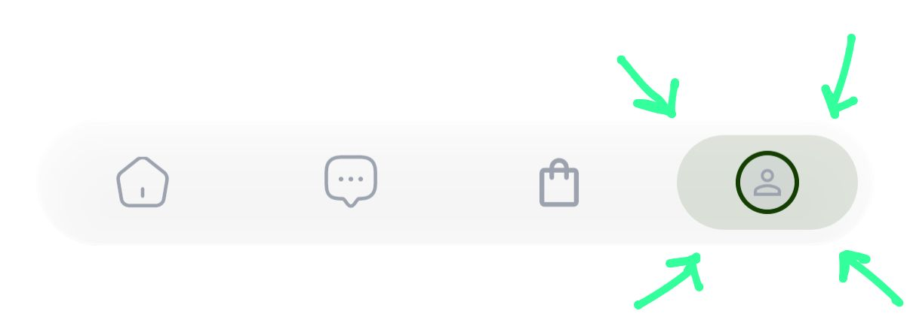
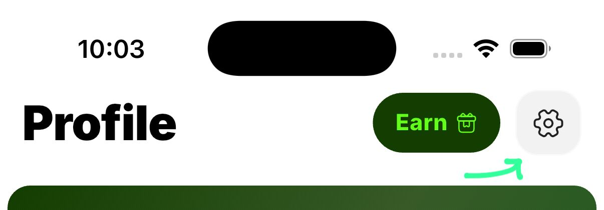
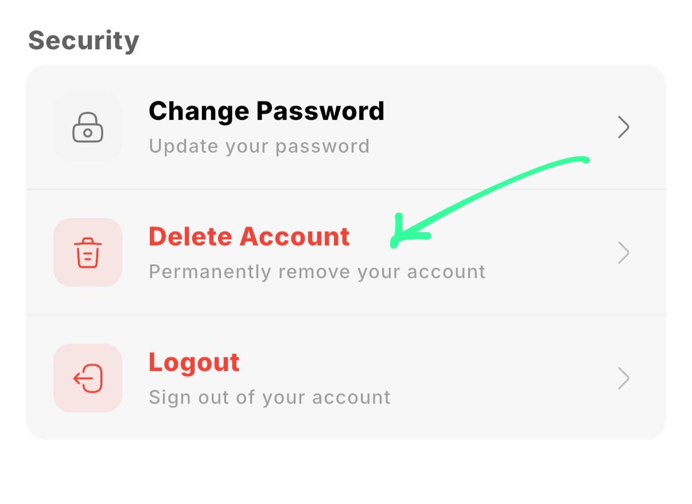
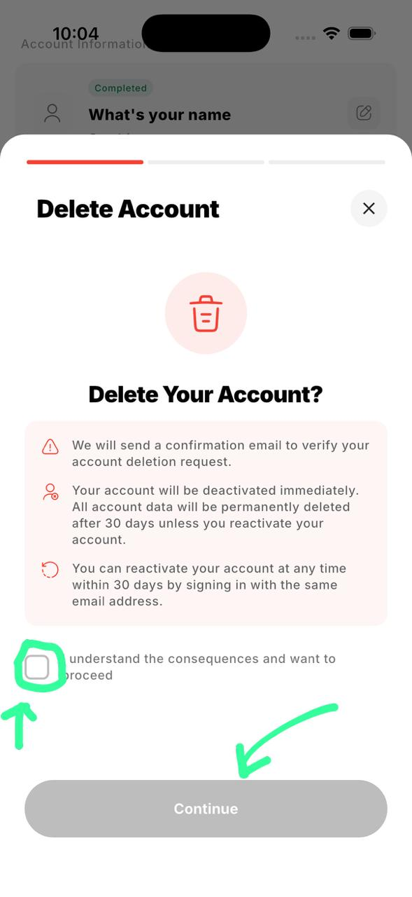
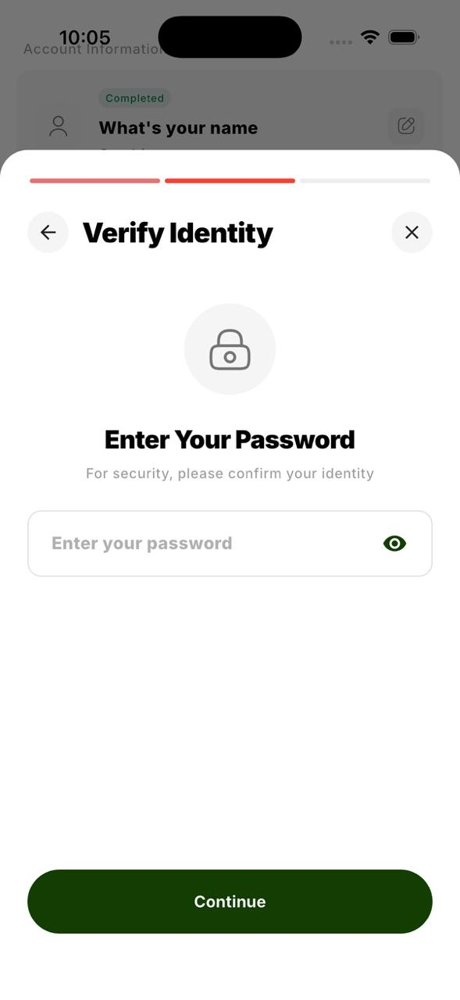
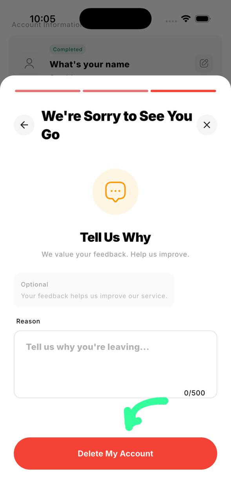
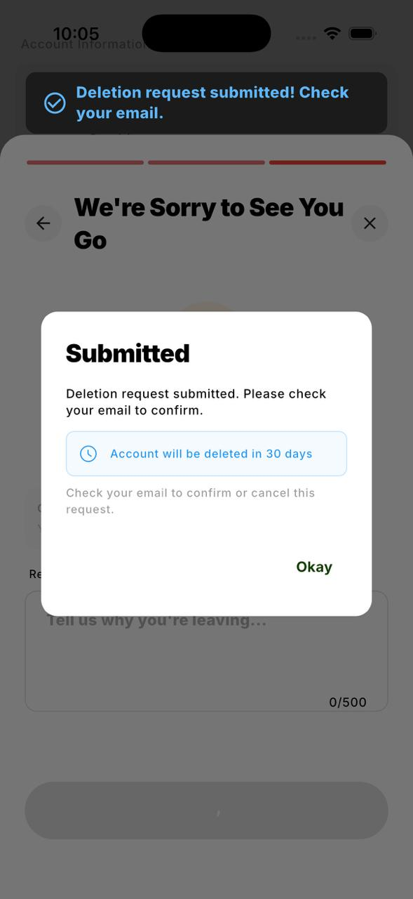
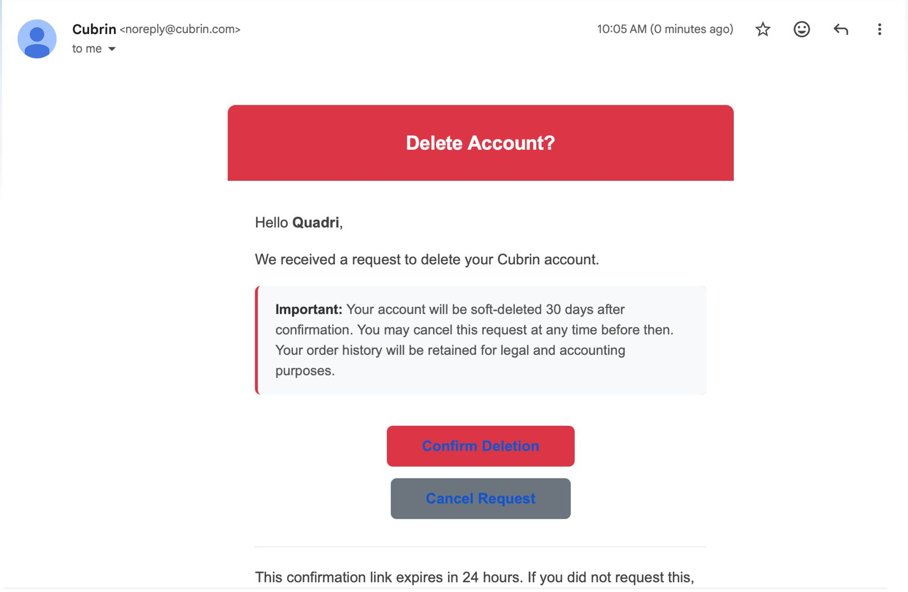

Account Deletion Guide
Follow the step-by-step visual guide below to delete your account directly from the Cubrin app.
Click on Profile

Click on Settings

Scroll Down & Tap Delete Account

Check the I Understand Box

Enter Your Password

Tap Delete My Account

Confirmation Popup — 30-Day Recovery
You'll see a popup confirming that your account can be recovered within 30 days.

Check Your Email
A confirmation email will be sent to your registered address.

Deletion Confirmed
Your account deletion request is now processed.

Cubrin Account Deletion Policy
Effective Date: July 12, 2026
At Cubrin, we respect your privacy and provide every user with the ability to permanently delete their account and personal information.
How to Delete Your Account
To request the deletion of your Cubrin account:
- Log in to the Cubrin mobile app.
- Tap Profile from the bottom navigation bar.
- Tap the Settings icon located in the top-right corner.
- Scroll to the Account Actions section.
- Tap Delete Account.
Before submitting your request, you must ensure that:
- You have no pending or unconfirmed orders.
- All existing orders have either been completed or cancelled.
You will then be asked to:
- Confirm that you understand the consequences of deleting your account by checking the confirmation box.
- Enter your account password to verify your identity.
- Optionally provide a reason for deleting your account.
After submitting your request, Cubrin will send a confirmation email to your registered email address.
30-Day Recovery Period
Once your deletion request has been confirmed, your account will enter a 30-day pending deletion period.
During this period:
- Your account will remain inactive.
- You may cancel the deletion request at any time by simply logging back into your account.
- All account information will remain available for restoration until the end of the 30-day period.
If you do not reactivate your account within 30 days, your deletion request becomes permanent.
Data Deleted
After the 30-day recovery period expires, Cubrin permanently deletes your personal information, including but not limited to:
- Full name
- Email address
- Phone number
- Delivery addresses
- Profile information
- Other personally identifiable account information
Data Retained
Certain records are retained after account deletion for legal, security, fraud prevention, financial reporting, and audit purposes. These include:
- Order history
- Transaction history
- Chat messages exchanged with other users (to preserve conversation history for remaining participants and maintain audit records)
Retained records are securely stored and are not used to restore your deleted account.
Automatic Deletion Process
Cubrin operates an automated background process that reviews pending deletion requests daily. Once the 30-day recovery period has expired, eligible accounts are permanently anonymized or deleted in accordance with this policy.
Cubrin Account Reactivation Policy
Effective Date: July 12, 2026
Cubrin provides a 30-day account recovery period following an account deletion request. During this period, users may restore their account if they change their mind.
Reactivating Your Account
If your account is within the 30-day recovery period, you can reactivate it by following these steps:
- Open the Cubrin or Cubrin Vendor app.
- Sign in using your registered email address and password.
- If your account is pending deletion, you will be shown a message informing you that your account is scheduled for permanent deletion and asking whether you would like to reactivate it.
- Select Reactivate Account to continue.
- Cubrin will send a One-Time Password (OTP) to your registered email address.
- Enter the OTP to verify your identity.
Once the OTP has been successfully verified, your account will be fully restored, and the pending deletion request will be cancelled.
All of your account information, settings, balances (where applicable), and other account data will remain available exactly as they were before the deletion request, provided the reactivation occurs within the recovery period.
After the Recovery Period
The account recovery period lasts for 30 days from the date the deletion request is confirmed.
If no reactivation is completed within those 30 days:
- The account will be permanently deleted.
- Personal information will be permanently removed in accordance with the Cubrin Account Deletion Policy.
- The account can no longer be recovered or restored.
- Users wishing to use Cubrin again must create a new account.
Security Verification
To protect user accounts, every reactivation request requires email verification using a One-Time Password (OTP). This verification helps ensure that only the legitimate account owner can restore a pending account.
Cubrin Vendor Account Deletion Policy
Effective Date: July 12, 2026
Vendor accounts require additional steps before deletion to ensure that customers, orders, and financial records are properly handled.
Requirements Before Deleting Your Vendor Account
Before requesting account deletion, you must complete all of the following requirements:
1. Archive All Products
All active products must be archived before deletion.
To archive products:
- Open the Cubrin Vendor app.
- Go to the Home screen.
- Tap See All above the product categories.
- Open the Active products section.
- For each product, tap the Archive button located beneath the Edit icon.
- Repeat until no active products remain.
Archived products are removed from public view and are no longer visible to customers.
2. Complete or Cancel All Orders
All pending orders must be completed or cancelled before your account can be deleted.
3. Request Settlement of Your Vendor Balance
If your vendor account has an available Cubrin Vendor Balance, you must submit a settlement request so that any eligible funds can be processed before account closure.
4. Close Your Shop
Before requesting deletion, set your shop status to Closed so customers are informed that your business is no longer accepting orders.
How to Delete Your Vendor Account
Once all requirements have been completed:
- Log in to the Cubrin Vendor app.
- Tap Profile.
- Open Settings.
- Scroll to the Delete Account option.
- Confirm that you have completed all required steps by selecting the confirmation checkbox.
- Enter your account password to verify your identity.
- Optionally provide a reason for deleting your account.
- Tap Delete My Account.
A confirmation email will be sent to your registered email address after your deletion request has been submitted.
30-Day Recovery Period
Vendor accounts follow the same 30-day recovery process as standard Cubrin accounts.
During this period, you may reactivate your account by signing in again. After the 30-day period expires, your personal account information is permanently deleted.
Data Deleted
After the recovery period, Cubrin permanently deletes personal information associated with the vendor account, including contact information, account profile information, and other personally identifiable data.
Data Retained
Cubrin retains certain business records where necessary for legal compliance, fraud prevention, financial reconciliation, and auditing. These records may include:
- Order history
- Transaction history
- Settlement records
- Shop activity logs
- Chat messages associated with customer communications
These retained records are preserved solely for compliance and audit purposes and cannot be used to restore a deleted account.
Automatic Deletion Process
Cubrin uses an automated background process that periodically reviews pending deletion requests. Once the 30-day recovery period has expired, eligible vendor accounts are permanently deleted or anonymized in accordance with this policy.